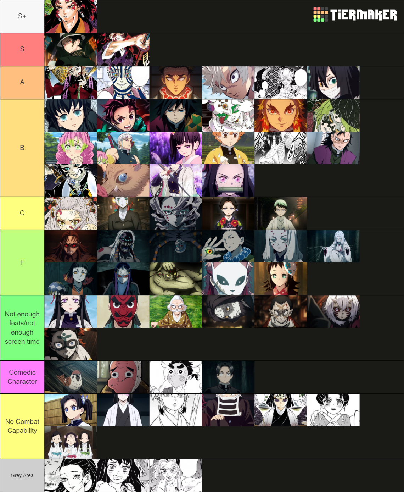

Demon Slayer
Seasons
Fandom
More
Fandom
The Demon Slayer fandom is a big community of people with different opinions.
Here is a link:
Demon Slayer Fandom
The fandom ranks characters:

link:
Demon Slayer Tier List